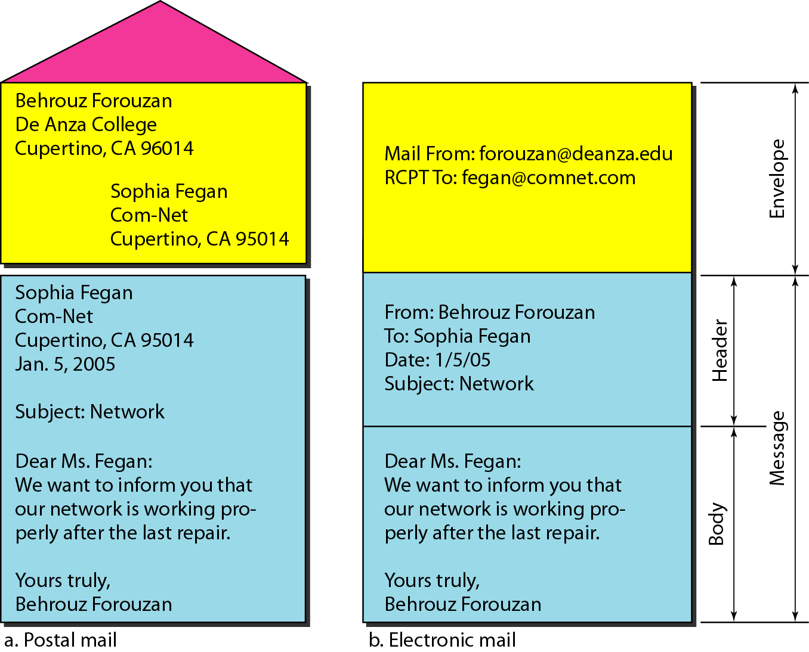
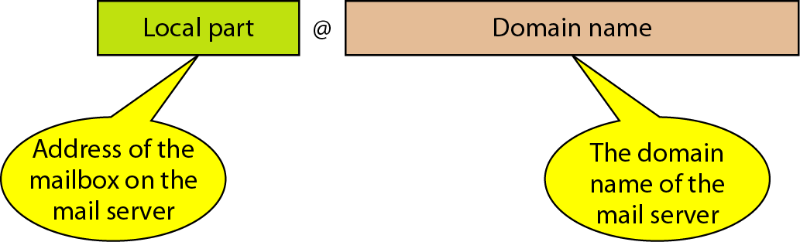
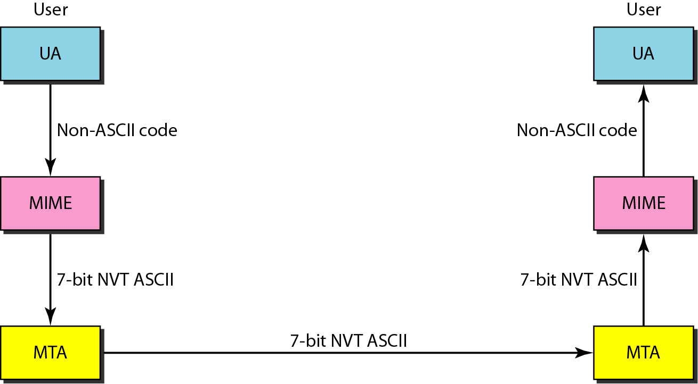
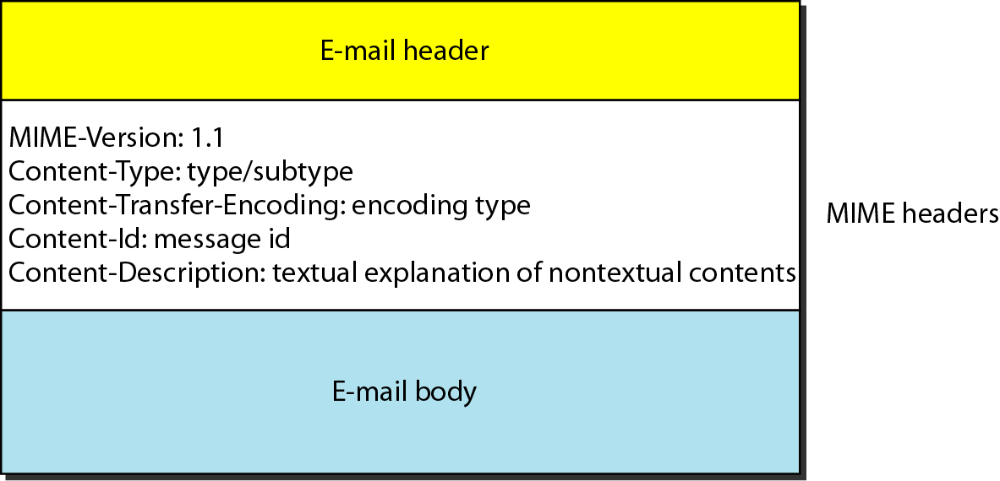
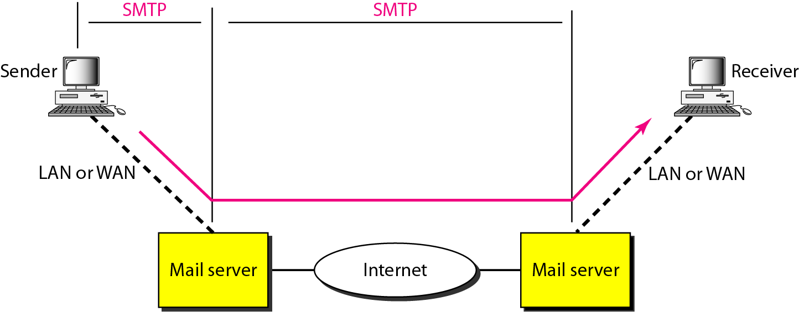
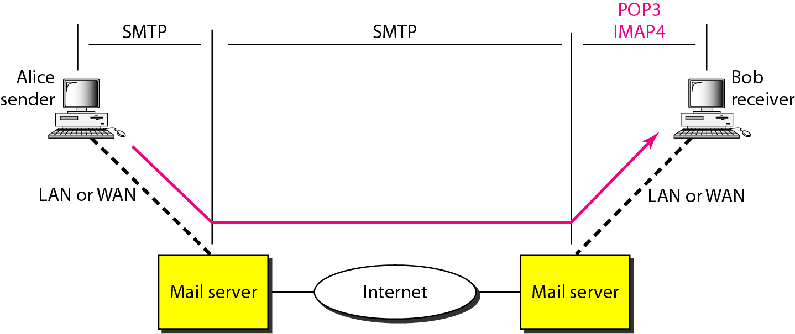
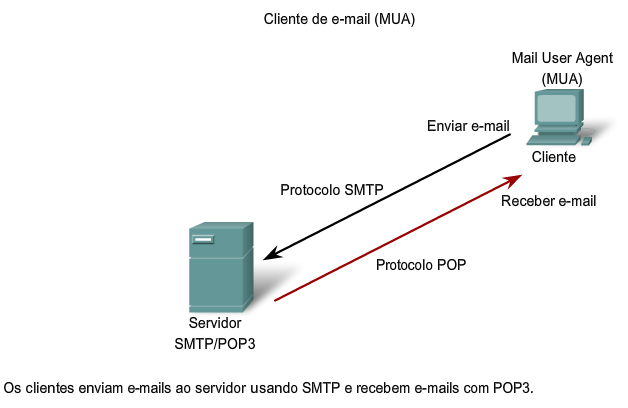
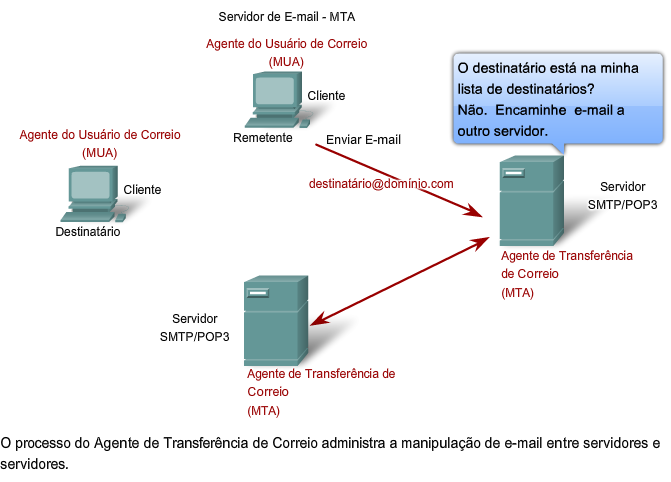
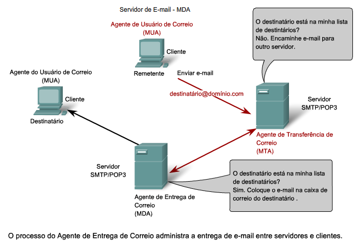

Disciplina: Aplicações Em Redes
Aula 02 - Aula02 - Protocolos de Email
1. Slide da aula
- Aula02 - Protocolos de Email
2. SMTP – Simple mail transfer Protocol
Em relação ao SMTP, podemos descrevê-lo da seguinte forma:
“SMTP é um protocolo relativamente simples, baseado em texto simples, onde um ou vários destinatários de uma mensagem são especificados (e, na maioria dos casos, validados) sendo, depois, a mensagem transferida. Esse protocolo usa a porta 25 numa rede TCP. A resolução DNS de um servidor SMTP de um dado domínio é possibilitada por sua entrada MX (Mail eXchange). A utilização em massa do SMTP remonta aos anos 80. Na altura era um complemento ao UUCP, que era mais adequado para transferências de correio eletrônico entre máquinas sem ligação permanente. Por outro lado, o desempenho do SMTP aumenta se as máquinas envolvidas, emissor e receptor, se encontrarem ligadas permanentemente.”
fonte: wikipedia
3 Correio eletrônico
Um dos serviços de rede mais populares é o correio eletrônico (email). O correio eletrônico é usado na transmissão de uma única mensagem que pode incluir: * Texto. * Voz. * Vídeo, gráfico ou mais de um desses objetos.
O protocolo SMTP (Simple Mail Transfer Protocol) é o mecanismo padrão de correio eletrônico da Internet.
3.1 Formato de um e-mail

- Endereços
- Para entregar um e-mail, o sistema de correio eletrônico deve usar um esquema de endereçamento com um endereço único.
- 0 esquema de endereçamento usado pelo SMTP consiste em duas partes: uma parte local e um nome de domínio, separados pelo sinal @

Parte Local: A parte local define o nome de um arquivo especial, denominado caixa de correio, onde todos os e-mails recebidos pelo usuário são depositados para serem recuperados pelo user agent.
Nome do Domínio: A segunda parte do endereço é o nome do domínio. Uma organização seleciona usualmente um ou dois hosts da rede para transmitir e receber os e-mails. Cada um desses hosts é denominado servidor de e-mail. O nome do domínio atribuído a cada servidor de e-mail é recebido da base de dados DNS ou é um nome lógico (por. ex., o nome da organização).
3.2 Cabeçalho de um e-mail
1 2 3 4 5 6 7 8 9 10 | |
3.3 MIME (Multipurpose Internet Mail Extensions)
O SMTP é um protocolo de transferência de e-mail simples. Entretanto, essa simplicidade tem um preço.
O SMTP pode enviar mensagens somente no formato de 7-bits do código ASCII. Logo. é inevitável que haja limitações.
Por exemplo, ele não pode ser usado em idiomas não suportados pelo código ASCII (tal como o francês, alemão, russo, chinês e o japonês). Além disso, não pode ser utilizado para enviar arquivos binários (arquivos que armazenam dados em um cadeia de Os e 1s sem usar qualquer tipo de codificação), áudio ou vídeo.
A especificação MIME (Multipurpose Internei Mail Extensions) é um protocolo suplementar que permite transmissões de dados não ASCII através do SMTP;
O MIME não é um protocolo de e-mail e não pode substituir o SMTP, Ele é apenas uma extensão do SMTP.
O MIME converte dados no formato não ASCII do remetente em dados ASCII e os entrega ao cliente SMTP para ser enviado à Internet. O servidor SMTP recebe esses dados no formato ASCII e os entrega ao MIME para serem reconvertidos para a forma original.
O MIME não se restringe ao SMTP, podendo ser utilizado em outros protocolos também, como o HTTP.
O S/MIME é um padrão desenvolvido para prover segurança ao MIME.
Podemos pensar no MIME como um conjunto de funções de software que converte dados genéricos em dados no formato ASCII e vice-versa.
O MIME define cinco tipos de cabeçalho que podem ser adicionados à seção do cabeçalho das mensagens SMTP original para definir os parâmetros de conversão.
- MIME Version (MIME-Versão)
- Content-Type(Conteúdo-Tipo)
- Content-Transfer-Encoding(Conteúdo-Transferência-Codificação)
- Content-ld (Conteúdo-Identificação)
- Content-Description (Conteúdo-Pescrição)

3.3.1 Cabeçalho do Mime

3.4 Caminho do SMTP

3.5 POP3
O Post Office Protocol (POP3) é um protocolo utilizado no acesso remoto a uma caixa de correio eletrônico. Ele está definido no RFC 1939 e permite que todas as mensagens contidas numa caixa de correio eletrônico possam ser transferidas sequencialmente para um computador local. Dessa maneira, o usuário pode ler as mensagens recebidas, apagá-las, responder-lhes, armazená-las, etc.
O funcionamento do protocolo POP3 é off-line, uma vez que o processo suportado se baseia nas seguintes etapas:
É estabelecida uma ligação TCP entre a aplicação cliente de e-mail (User Agent - UA) e o servidor onde está a caixa de correio (Message Transfer Agent - MTA)
O usuário se autentica;
Todas as mensagens existentes na caixa de correio são transferidas sequencialmente para o computador local;
As mensagens são apagadas da caixa de correio (opcionalmente, o protocolo pode ser configurado para que as mensagens não sejam apagadas da caixa de correio; se esta opção não for utilizada, deve-se utilizar sempre o mesmo computador para ler o correio eletrônico, para poder manter um arquivo das mensagens);
A ligação com o servidor é terminada;
O usuário pode agora ler e processar as suas mensagens (off-line).
3.5.1 POP3 - Desvantagens
0 POP3 assume que toda vez que um cliente acessa o servidor toda a caixa de correio será transferida.
Isto não é conveniente para as pessoas que acessam as caixas de correio de diferentes clientes.
O POP3 é deficiente nesses casos.
Ele não permite que o usuário organize e-mails no próprio servidor; além disso, o POP3 não permite que o usuário tenha pastas diferentes no servidor;
Usa a porta 110 para estabelecer uma conexão entre a máquina do destinatário de uma mensagem e o MTA;
3.6 imap4
Internet Mail access Protocol – Definido na RFC 2060, o IMAP procura resolver os problemas dos usuários móveis, que estão sempre acessando a caixa postal de locais diferentes.
O IMAP foi projetado para que as mensagens fossem deixadas no servidor, ao invés de transferidas a maquina do cliente, como faz o POP. As mensagens e pastas podem ser manipuladas pelo IMAP como se fossem locais, mas estarão sempre como foram deixadas no último acesso, independente de onde o usuário da caixa está acessando.
O Imap usa a porta 143 do TCP para conexão MUA-MTA.
O IMAP4 oferece as seguintes funções extra:
Um usuário pode verificar os e-mails antes de baixá-los.
Um usuário pode fazer uma busca de um determinado conteúdo em um e-mail antes de baixá-lo.
Um usuário pode baixar apenas as mensagens selecionadas. Isto é especialmente útil quando a largura de banda do link utilizado é baixa e o e-mail contém “arquivos pesados’, como de multimídia.agar ou renomear as caixas de correio no servidor de e-mail.
Um usuário pode criar uma hierarquia de caixas de correio em uma pasta para armazenamento de e-mail.
3.7 Fluxograma de funcionamento dos protocolos POP3 e IMAP

3.8 Processos de Servidor de E-mail - MTA e MDA
Servidor de e-mail opera dois processos separados:
- Mail Transfer Agent (MTA);
- Mail Delivery Agent (MDA);
O processo MTA é utilizado para encaminhar e-mail.
- O MTA recebe mensagens do MUA ou de outro MTA em outro servidor de e-mail. Se a correspondência for endereçada a um usuário cuja caixa de correio fique no servidor local, ela será passada para o MDA.
Serviço de E-mail e Protocolos SMTP/POP

O MDA aceita um e-mail de um MTA e faz a entrega real.
O MDA recebe toda correspondência chega no MTA e a coloca nas caixas de correio dos usuários adequados.
O MDA também pode solucionar problemas de entrega final, como varredura de vírus, filtragem de spam e tratamento de recebimento de retorno.
A maioria das comunicações por e-mail utiliza as aplicações MUA, MTA e MDA. No entanto, há outras alternativas para entrega de e-mail.


Referências
Livro “Comunicação de dados” – Forouzan
Material Cisco Academy ver. 4.1